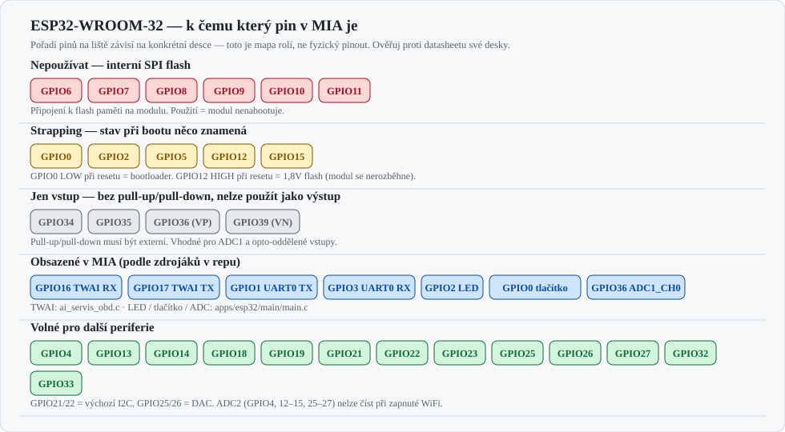
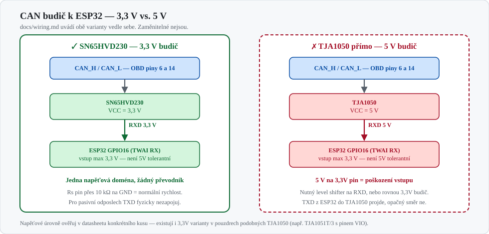

Zapojení ESP32 modulů do MIA
Pro koho: ten, kdo pájí a montuje ESP32 desky do auta nebo na stůl Stav: návrh zapojení + revize firmwaru. Pět chyb v
ai_servis_obd.cje opravených (kap. 10), zapojení v autě zatím odzkoušené není. Sourozenecký dokument: Zapojení MIA do Audi A4 Cabriolet 8H — tam je strana Raspberry Pi a vozu, tady je strana mikrokontroléru.
1. Co v repu reálně je
Tohle není přání, ale stav zdrojáků. Piny jsou vyčtené z kódu, ne z dokumentace:
| Modul | Cesta | Rozhraní | Piny / rychlost |
|---|---|---|---|
| OBD přes TWAI (ESP-IDF) | apps/esp32/firmware-obd/components/ai_servis_obd/ai_servis_obd.c |
CAN (TWAI), MQTT | RX GPIO16, TX GPIO17, 500 kbit/s |
| Telemetrie po UART (ESP-IDF) | apps/esp32/main/main.c |
UART0 → Pi, JSON po řádcích | LED GPIO2, tlačítko GPIO0, ADC1_CH0 (= GPIO36), 115200 Bd |
| ELM327 emulátor (Arduino) | apps/esp32/elm327-emulator/src/main.cpp |
2× UART | Serial 38400 Bd (skener), Serial2 115200 Bd (Pi) |
| WiFi most (Arduino) | apps/esp32/MIAWiFiBridge/MIAWiFiBridge.ino |
WiFi AP + TCP | TCP port 8888, SSID MIA-Bridge |
| Protokol MIA | apps/arduino/MIAProtocol/ |
rámce po sériové lince | — |
| Protistrana na Pi | apps/rpi-backend/py-api/hardware/serial_bridge.py |
UART → ZeroMQ :5556 |
výchozí /dev/ttyUSB0, 115200 Bd |
Sestavení v CI nepokrývá všechno
apps/esp32/platformio.ini má src_dir = main, takže CI job esp32-build překládá jen apps/esp32/main/.
Projekt apps/esp32/firmware-obd/ má vlastní CMake a do CI se nedostane — chyby v něm nikdo nezachytí (viz kapitola 10).
2. Mapa pinů — co si můžeš dovolit

Tři pravidla, která tahle mapa shrnuje:
- GPIO6–GPIO11 nikdy. Jsou drátem k flash paměti na modulu. Připojíš cokoliv → modul nenabootuje.
- Strapping piny čtou svůj stav při resetu.
GPIO0stažený k zemi v okamžiku resetu = modul jde do bootloaderu místo do aplikace.GPIO12tažený nahoru při resetu přepne napájení flash na 1,8 V a modul se nerozběhne. - GPIO34–39 jsou jen vstupy a nemají interní pull-up ani pull-down. Externí odpor je povinný, jinak vstup plave.
Tlačítko na GPIO0 je past, kterou si MIA nese ve firmwaru
apps/esp32/main/main.c používá GPIO0 jako tlačítko s interním pull-upem. Funguje to, dokud tlačítko nikdo nedrží při zapnutí zapalování. Pak modul naběhne do bootloaderu a MIA ho nikdy neuvidí.
V autě, kde se napájení objeví ve stejný okamžik, kdy může řidič držet tlačítko, to je reálný scénář.
Řešení: přesuň tlačítko na volný pin (GPIO4, GPIO13, GPIO27…) a GPIO0 nech být.
GPIO16/17 nejsou volné na každém modulu
TWAI je v repu na GPIO16 a GPIO17. Na modulech ESP32-WROVER (ty s PSRAM) jsou tyhle dva piny obsazené právě tou PSRAM a ven nevedou.
Na WROOM-32 (bez PSRAM) volné jsou. platformio.ini má -DBOARD_HAS_PSRAM=0, takže projekt s WROOM počítá — kup WROOM, nebo TWAI piny přemapuj.
3. Napájení
graph LR
B["Palubní síť 12 V<br/>KL.30 přes pojistku"]
M["Měnič 12 V → 5 V<br/>vstup 6–36 V, min. 1 A"]
C["Bulk kondenzátor<br/>220–470 µF u modulu"]
L["LDO na desce<br/>(AMS1117: 5 V → 3,3 V)"]
E["ESP32<br/>špičky až ~500 mA"]
B --> M --> C --> L --> E
| Veličina | Hodnota | Proč |
|---|---|---|
| Vstup měniče | 6–36 V | při startování motoru napětí padá hluboko pod 9 V; „12V nominal" modul ESP32 shodí |
| Výstup měniče | 5 V / ≥ 1 A | ESP32 bere ve špičkách při vysílání WiFi kolem 500 mA, měnič musí mít rezervu |
| Bulk kondenzátor | 220–470 µF co nejblíž modulu | pokrývá vysílací špičky, bez něj brownout uprostřed WiFi přenosu |
| Blokovací kondenzátor | 100 nF u pinu 3V3 | vysokofrekvenční šum |
| Pojistka | 1 A na odbočce | chrání kabel, ne modul |
| Průřez napájení | 0,5 mm² | proud je malý, mechanická pevnost velká |
Nikdy nenapájej desku z USB a z auta současně
Většina DevKit desek vede 5 V z USB a z pinu VIN/5V na stejný uzel, jen přes Schottkyho diodu (a spousta klonů ani to ne).
Zapojené obojí = měnič z auta tlačí proud do USB portu notebooku. Při flashování odpoj napájení z auta.
3,3 V z Raspberry Pi jako napájení ESP32 nestačí
Pin 3V3 na Pi má rozpočet zhruba 250 mA pro celou lištu. ESP32 s WiFi si ve špičce řekne o dvojnásobek. Napájej ESP32 vlastní větví z 5 V a s Raspberry Pi spoj jen zem a datové vodiče.
4. CAN / TWAI

docs/wiring.md dosud uváděl „SN65HVD230/TJA1050" jako by šlo o alternativy. Nejdou:
SN65HVD230 je 3,3V budič, TJA1050 je 5V budič a ESP32 není 5V tolerantní.
TJA1050 se na ESP32 připojit dá, ale jen s převodníkem úrovní na vodiči RXD, nebo výměnou za typ s odděleným pinem VIO (TJA1051T/3).
4.1 Zapojení
| SN65HVD230 | ESP32 | Poznámka |
|---|---|---|
VCC |
3V3 |
ne 5 V |
GND |
GND |
společná zem, viz kap. 7 |
RXD |
GPIO16 |
budič → ESP32 |
TXD |
GPIO17 |
ESP32 → budič; pro pasivní odposlech nezapojuj |
Rs |
přes 10 kΩ na GND |
normální rychlost; přímo na GND taky funguje |
CANH / CANL |
OBD piny 6 a 14 | kroucený pár |
4.2 Terminace — v autě ne, na stole ano
Tohle plete nejvíc lidí:
| Kde | Odpor 120 Ω | Proč |
|---|---|---|
| V autě na OBD | nepřidávej | sběrnice je z výroby zakončená na obou koncích; třetí odpor sníží impedanci a rozhodí komunikaci |
| Na stole (ESP32 ↔ ESP32, ESP32 ↔ USB-CAN) | 2× 120 Ω, na každém konci jeden | bez nich se nedomluví nic a budeš hledat chybu v kódu |
Většina modulů SN65HVD230 z tržiště má 120 Ω osazený napevno na desce. Před použitím v autě ho vypájej nebo přeřízni propojku.
4.3 Pasivní odposlech vs. aktivní dotazování
Jsou to dva různé režimy a firmware musí vědět, ve kterém je:
| Režim | Co dělá | Jak sestavit | Drát |
|---|---|---|---|
| Pasivní odposlech | jen poslouchá, na sběrnici nic neposílá | idf.py build -DMIA_TWAI_LISTEN_ONLY=1 |
TXD nezapojený |
| Aktivní OBD dotazy | posílá rámce na 0x7DF, čte odpovědi z 0x7E8 |
idf.py build (výchozí) |
TXD zapojený |
Softwarový přepínač sám o sobě není záruka
TWAI_MODE_LISTEN_ONLY je hodnota v konfiguračním registru — chyba v kódu ji přepíše.
Když chceš mít jistotu, že se na sběrnici nic neobjeví, nezapoj vodič TXD mezi ESP32 a budičem. Budič pak nemá čím sběrnici rozkmitat, ať v softwaru nastaví kdokoli cokoli. Nastav oboje, ne jedno místo druhého.
5. UART k Raspberry Pi
Dvě cesty:
| Zapojení | serial_bridge.py |
Kdy | |
|---|---|---|---|
| A) USB | USB kabel DevKit → Pi | funguje bez úprav (/dev/ttyUSB0) |
vývoj, stůl |
| B) GPIO UART | 3 vodiče, viz níže | nutné přepnout na /dev/serial0 |
do auta — míň konektorů, míň bodů selhání |
Zapojení varianty B. Všimni si, že TX vždy jde do RX — linka se kříží:
graph LR
ETX["ESP32 GPIO1<br/>TX"] --> PRX["Pi GPIO15<br/>RXD"]
PTX["Pi GPIO14<br/>TXD"] --> ERX["ESP32 GPIO3<br/>RX"]
EG["ESP32 GND"] --- PG["Pi GND"]
- Křížení je povinné: TX jde do RX, ne TX do TX.
- Zem musí být společná, jinak se linka chová náhodně.
- Převodník úrovní tady nepotřebuješ: ESP32 i Raspberry Pi mají 3,3V logiku. (Pozor: klasické Arduino Uno má 5V logiku a tam převodník nutný je.)
- Pro variantu B je potřeba v Pi vypnout sériovou konzoli, zapnout
enable_uart=1aserial_bridge.pynasměrovat na/dev/serial0(výchozí je/dev/ttyUSB0, 115200 Bd).
UART0 sdílí piny s flashováním
GPIO1/GPIO3 jsou zároveň programovací linka. Když na nich visí Raspberry Pi, může držet úrovně tak, že flashování přes USB selže.
Při aktualizaci firmwaru dráty k Pi rozpoj, nebo používej OTA (apps/esp32/MIAWiFiBridge už ArduinoOTA obsahuje).
6. Vstupy a výstupy
6.1 Vstup z autoelektriky (12 V) — vždy přes optočlen
Stejné schéma jako pro Raspberry Pi v sourozeneckém návodu, jen cílové napětí je 3,3 V:
12V signál ──[ R1 2,2 kΩ / 0,25 W ]──┬── anoda PC817
│
D1 1N4148 (antiparalelně k LED)
│
katoda PC817 ──┴── GND
Výstup PC817:
kolektor ──┬── GPIO (např. GPIO27)
│
R2 10 kΩ pull-up
│
3V3 ← pozor: 3V3, ne 5V
emitor ────── GND
C1 100 nF mezi GPIO a GND
Logika je obrácená: signál aktivní → optočlen sepne → GPIO čte LOG. 0.
Na GPIO nesmí 12 V ani 5 V
Absolutní maximum na pinu ESP32 je přibližně 3,6 V. Odporový dělič z 12 V není dostatečná ochrana — při špičkách v palubní síti (load dump) dělič propustí násobky. Galvanické oddělení optočlenem je jediná varianta, která to přežije.
6.2 Výstup na zátěž — relé přes optočlen
- Optočlenem oddělená relé deska s 12V cívkou, řízená z GPIO.
- Ochranná dioda 1N4007 antiparalelně k cívce.
- Cívku napájej z vlastní jištěné větve, ne z 3,3 V modulu.
- Klidový stav = rozepnuto. Při resetu ESP32 jsou GPIO ve vysoké impedanci — zátěž musí sama od sebe zůstat vypnutá.
- Nic bezpečnostního: střecha, zamykání, vnější světla, palivo, chlazení.
7. Uzemnění, stínění, teplota
- Jeden společný zemnící bod pro měnič, ESP32, budič CAN i relé desku. Zem braná na dvou místech karoserie = zemní smyčka a šum na CAN i na audiu.
- CAN vždy kroucený pár, průřez 0,35–0,5 mm². Nevést podél zapalovacích kabelů ani vedení alternátoru.
- Anténa ESP32 nesmí ležet na plechu ani v kovové krabičce. Pokud je modul v krabici, vyveď anténu ven nebo použij variantu s U.FL konektorem.
- V kabinu v létě přes 60 °C. ESP32 je specifikované do 85 °C, ale levné LDO a elektrolyty na klonech ne — elektrolyty volte na 105 °C a modul nedávej na přímé slunce pod palubku.
8. Flashování a první boot
# PlatformIO (apps/esp32 — překládá jen main/)
cd apps/esp32
pio run -t upload
pio device monitor -b 115200
# ESP-IDF (apps/esp32/firmware-obd — vlastní projekt, mimo CI)
cd apps/esp32/firmware-obd
idf.py set-target esp32
idf.py build flash monitor
Když modul nenabootuje, projdi tohle pořadí:
- Drží něco
GPIO0u země? (tlačítko, Pi, odpor) → modul je v bootloaderu. - Je na
GPIO12pull-up? → flash běží na špatném napětí. - Visí něco na
GPIO6–GPIO11? → konflikt s flash pamětí. - Padá napájení při startu WiFi? → chybí bulk kondenzátor, hlaska
Brownout detector was triggered. - Je připojené Raspberry Pi na
GPIO1/GPIO3? → rozpoj a zkus znovu.
9. Kontrolní seznam před montáží do auta
- [ ] Modul je WROOM (ne WROVER), nebo jsou TWAI piny přemapované
- [ ] Tlačítko není na
GPIO0 - [ ] Budič CAN je 3,3V typ, nebo je na RXD převodník úrovní
- [ ] Odpor 120 Ω na modulu budiče je pro provoz v autě odstraněný
- [ ] Pro pasivní odposlech je TXD fyzicky nezapojený
- [ ] Bulk kondenzátor 220–470 µF je osazený u modulu
- [ ] Vstupy z autoelektriky jdou přes optočlen, nikde není 12 V blízko GPIO
- [ ] Zem na jednom bodě, dotažená, očištěná od laku
- [ ] Při flashování odpojené napájení z auta
- [ ] Anténa není na plechu
- [ ] Relé v klidu rozepnutá, na nic bezpečnostního nepřipojená
10. Nálezy proti firmwaru — opravené
Při psaní tohohle návodu jsem porovnával dokumentaci se zdrojáky
apps/esp32/firmware-obd/components/ai_servis_obd/ai_servis_obd.c. Nesedělo pět věcí.
Všech pět je v tomhle PR opravených a ověřených překladem i během proti náhradním (stub) hlavičkám ESP-IDF.
N1 — OBD dotaz měl rámec posunutý o bajt, takže jednotka nikdy neodpověděla
Šablona dotazu měla jako první prvek pole uint8_t hodnotu 0x7DF — CAN identifikátor.
Do bajtu se nevejde a uřízne se na 0xDF, čímž se posune celý zbytek rámce:
| Odesílaná data | PCI nibble | Výsledek | |
|---|---|---|---|
| Před | DF 02 01 0C 00 00 00 00 |
0xD |
neplatný typ rámce → ECU zahodí |
| Po | 02 01 0C 55 55 55 55 55 |
0x0 |
platný jednoduchý rámec |
CAN identifikátor do datové části nepatří; nastavuje se na zprávě zvlášť, což kód už dělal.
Že šlo o posun o jeden bajt, potvrzovala i kontrola odpovědi (message.data[2] == pid), která
odpovídá správnému rozložení 03 41 <pid> …, zatímco dotaz se plnil na data[3].
Oprava: identifikátor ze šablony pryč, PID se plní na data[2], výplň 0x55 podle ISO 15765-2.
N2 — twai_message_t se neinicializovala
Vyplňovaly se data, identifier a data_length_code, ale ne příznaky. Struktura má bitové
pole (extd, rtr, ss, self, dlc_non_comp), které tím zůstalo s náhodným obsahem ze
zásobníku — rámec mohl odejít jako 29bitový extended nebo jako RTR, nereprodukovatelně.
Oprava: twai_message_t message = {0};
N3 — nešlo zvolit pasivní odposlech
Ovladač se instaloval napevno v TWAI_MODE_NORMAL a odposlechová varianta nešla sestavit,
ačkoli docs/wiring.md listen-only sliboval.
Oprava: přepínač při překladu, ve výchozím stavu vypnutý (aktivní dotazování je smysl téhle komponenty, listen-only by ji umlčel):
idf.py build # normální režim, posílá dotazy
idf.py build -DMIA_TWAI_LISTEN_ONLY=1 # pasivní odposlech
V odposlechové variantě se ovladač instaluje v TWAI_MODE_LISTEN_ONLY a ai_servis_obd_read_pid()
místo vysílání vrátí ESP_ERR_NOT_SUPPORTED. Přepínač je napojený v CMakeLists.txt komponenty
přes target_compile_definitions() — bez toho by idf.py ten -D na příkazové řádce přijal
a tiše zahodil. Kconfig zatím ne; soubor už stejný #ifndef vzor používá pro
MQTT_ALERT_BROKER_URI.
Přepínač nenahrazuje odpojený drát
Režim řadiče je registr, který chyba v kódu přepíše. Pro tvrdou záruku nech vodič TXD
mezi ESP32 a budičem fyzicky nezapojený. Nastav oboje, ne jedno místo druhého.
N4 — zbytečná konfigurace TX pinu před instalací ovladače
TWAI_TX_PIN se nastavoval jako obyčejný výstup GPIO těsně před twai_driver_install().
Ovladač si pin směruje sám přes GPIO matici, takže to nic nedělalo — a kdyby někdo ten blok při
úpravách přesunul za instalaci ovladače, přebil by směrování a vysílání by přestalo fungovat.
Oprava: blok smazán, na jeho místě je komentář vysvětlující proč tam nepatří.
N5 — twai_transmit() volaný s chybějícím argumentem
esp_err_t ret = twai_transmit(&message); // chybí ticks_to_wait
Skutečná signatura v ESP-IDF je twai_transmit(const twai_message_t *message, TickType_t ticks_to_wait).
Proti opravdovému ESP-IDF se tenhle soubor nepřeložil vůbec — což je zároveň důkaz, že komponenta
nikdy sestavená nebyla.
Oprava: twai_transmit(&message, pdMS_TO_TICKS(100)), stejný timeout jako u čekání na odpověď.
N6 — projekt firmware-obd byl nesestavitelný
Tenhle nález už opravený je, ale stálo to víc než doplnit build soubory.
Chyběly CMakeLists.txt pro main/ i pro komponentu ai_servis_obd/. Doplnit je ale
nestačilo — build by se posunul jen o krok dál, k chybějícím hlavičkám. main.c includuje
a volá čtyři komponenty a existovala z nich jedna:
| Komponenta | Stav před | Stav teď |
|---|---|---|
ai_servis_obd |
existovala | beze změny, plus ai_servis_obd_get_queue() |
ai_servis_config |
nebyla v repu | dopsaná — konfigurace v NVS, výchozí hodnoty přeložené napevno |
ai_servis_mqtt |
nebyla v repu | dopsaná — WiFi STA + esp-mqtt klient, fronta publikací |
ai_servis_ble |
nebyla v repu | dopsaná — Bluedroid GATT server, příkazy a notifikace telemetrie |
Projektový CMakeLists.txt navíc ukazoval EXTRA_COMPONENT_DIRS na
${CMAKE_CURRENT_SOURCE_DIR}/../shared, což je adresář, který v repu není. Odstraněno —
components/ si ESP-IDF najde samo.
Při tom vyplavaly dvě další věci ve sdkconfig.defaults:
- Bluetooth nebyl zapnutý. Byl tam
CONFIG_BT_BLE_ENABLED=y, ale neCONFIG_BT_ENABLEDani host stack. Bez nich komponentabtneexportuje aniesp_bt.h, takže ta jedna řádka byla bez účinku. CONFIG_NVS_ENCRYPTION=ynic nedělalo. Závisí naCONFIG_SECURE_FLASH_ENC_ENABLED, který nastavený nebyl, takže se volba při generovánísdkconfigtiše zahodila. Šifrování NVS tedy nikdy zapnuté nebylo, jen to tak v souboru vypadalo. Zapnout kvůli tomu šifrování flash je na reálném kusu železa nevratný krok a patří do rozhodnutí o provisioningu, ne do build defaultů — proto je tam teď místo té řádky komentář, který to říká.
Binárka se taky nevešla do výchozího 1MB oddílu, takže přibyl
CONFIG_PARTITION_TABLE_SINGLE_APP_LARGE=y a 4MB flash. I tak zbývají jen ~4 % volného
místa v app oddílu — při dalším růstu bude potřeba vlastní tabulka oddílů.
Fan-out telemetrie je nový kus chování
ai_servis_obd_task() plnil frontu, kterou nikdo nevyprazdňoval. Přibyla úloha
telemetry_fanout_task v main.c, která vzorky rozesílá na BLE notifikaci a na MQTT
téma mia/telemetry/<device_id>. Bez ní by telemetrická charakteristika vracela nuly.
Proč to nechytila CI — a co s tím teď je
apps/esp32/platformio.ini má src_dir = main, takže job esp32-build překládal jen
apps/esp32/main/. Projekt firmware-obd/ se nepřekládal vůbec — -Woverflow u N1 ani
chyba argumentu u N5 tak neměly kde vzniknout. Přibyl proto job
esp32-obd-build, který firmware-obd staví přes ESP-IDF v obou konfiguracích
(výchozí i -DMIA_TWAI_LISTEN_ONLY=1).
Jak jsem opravy ověřil
Ověřovalo se ve dvou kolech. Nejdřív, než byly komponenty dopsané, proti náhradním (stub) hlavičkám se skutečnými signaturami z ESP-IDF:
| Kontrola | Výsledek |
|---|---|
gcc -Wall -Wextra -Woverflow na původní verzi |
warning: … changes value from '2015' to '223' |
původní verze proti skutečné signatuře twai_transmit() |
error: too few arguments (N5) |
gcc i clang, -Wall -Wextra, obě konfigurace |
bez varování |
| běh, výchozí režim | twai_driver_install: mode=0, rámec id=0x7DF extd=0 rtr=0 data=02 01 0C 55 55 55 55 55 |
běh, -DMIA_TWAI_LISTEN_ONLY=1 |
mode=2, read_pid → ESP_ERR_NOT_SUPPORTED, nic se neodeslalo |
volání gpio_config() |
žádné — blok z N4 je pryč |
Clang stojí za zmínku zvlášť: v odposlechové konfiguraci hlásil obd_request_template jako
nepoužitou proměnnou, zatímco GCC mlčel. Šablona je proto schovaná za #if !MIA_TWAI_LISTEN_ONLY.
Po vyřešení N6 už jde projekt sestavit doopravdy, takže druhé kolo proběhlo skutečným
ESP-IDF v5.5.5 s xtensa-esp32-elf-gcc 14.2.0:
| Kontrola | Výsledek |
|---|---|
idf.py build, výchozí konfigurace |
projde, ai-servis-obd.bin 0x167560 B |
idf.py build -DMIA_TWAI_LISTEN_ONLY=1 |
projde, 0x166ec0 B — o 1 696 B méně |
varování v našich zdrojích (IDF staví s -Wall -Wextra) |
žádné |
nm na odposlechové binárce |
twai_transmit 0 výskytů — linker vysílací cestu vyhodil |
Ten poslední řádek je to, co u N3 dosud chybělo: že se v odposlechové variantě opravdu nedá vysílat, ne jen že to tak vypadá ve zdrojáku.
Co ani tohle nenahrazuje: běh na cílové desce připojené ke skutečné sběrnici. Že se firmware přeloží a slinkuje, neříká nic o tom, jestli ECU na rámce odpoví.
11. Materiál
| Položka | Poznámka |
|---|---|
| ESP32-WROOM-32 DevKit | ne WROVER, pokud chceš TWAI na GPIO16/17 |
| Modul budiče SN65HVD230 | 3,3V typ; zkontroluj a odstraň napevno osazený 120 Ω |
| Měnič 12 V → 5 V, vstup 6–36 V, ≥ 1 A | automotive, odolný load dump |
| Elektrolyt 220–470 µF / 16 V, 105 °C + keramika 100 nF | u modulu |
| Optočleny PC817, odpory 2,2 kΩ a 10 kΩ, diody 1N4148, kondenzátory 100 nF | vstupy |
| Optočlenem oddělená relé deska 12 V + diody 1N4007 | výstupy |
| Kroucený pár 0,35 mm² (CAN), 0,5 mm² (napájení, signály) | |
| USB-CAN adaptér nebo druhá ESP32 + 2× 120 Ω | stolní testování bez auta |
| Dutinky, kleště, smršťovací bužírky, textilní páska | žádné scotchloky |
12. Odkazy
Oficiální dokumentace (ověřeno, že odkazy fungují):
- ESP-IDF — TWAI (CAN) driver — režimy, časování,
twai_message_t - ESP-IDF — GPIO & RTC GPIO
- ESP-IDF — UART
- ESP-IDF — ADC oneshot — proč ADC2 při WiFi nejde
- ESP-IDF — Application startup flow — co se děje se strapping piny při bootu
- ESP-IDF — OTA aktualizace
- ESP-IDF — Hardware reference
- ESP-IDF — Get Started
- PlatformIO — platforma Espressif 32
Datasheety (ověřeno):
- ESP32 datasheet — absolutní maxima na pinech, strapping
- ESP32-WROOM-32 datasheet — odběr, doporučené zapojení napájení
- TI SN65HVD230 — 3,3V budič, funkce pinu
Rs - NXP TJA1050 — 5V budič, porovnej úrovně na
RXDs maximy ESP32
Linux / strana Raspberry Pi:
- SocketCAN v jádře Linuxu —
can0, listen-only,candump - python-can — čtení sběrnice z Pythonu
Repozitáře (kanonické projekty; přes firemní proxy je nešlo ověřit, ověř si je sám):
github.com/espressif/esp-idf— příklady vexamples/peripherals/twai/github.com/espressif/arduino-esp32— Arduino jádro pro ESP32github.com/linux-can/can-utils—candump,cansend,cangenpro stolní testy
V tomhle repu:
- Zapojení MIA do Audi A4 Cabriolet 8H — strana vozu a Raspberry Pi
- Wiring & Power (OBD-II/CAN) — stručná verze zapojení OBD
- Rozbor rozhraní vozu (anglicky)